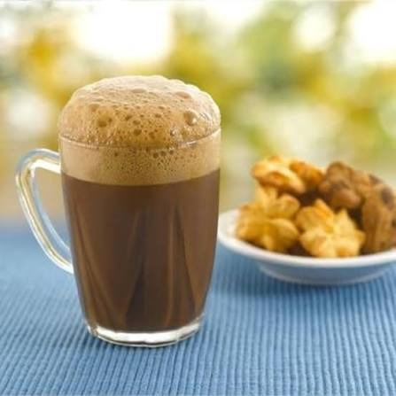
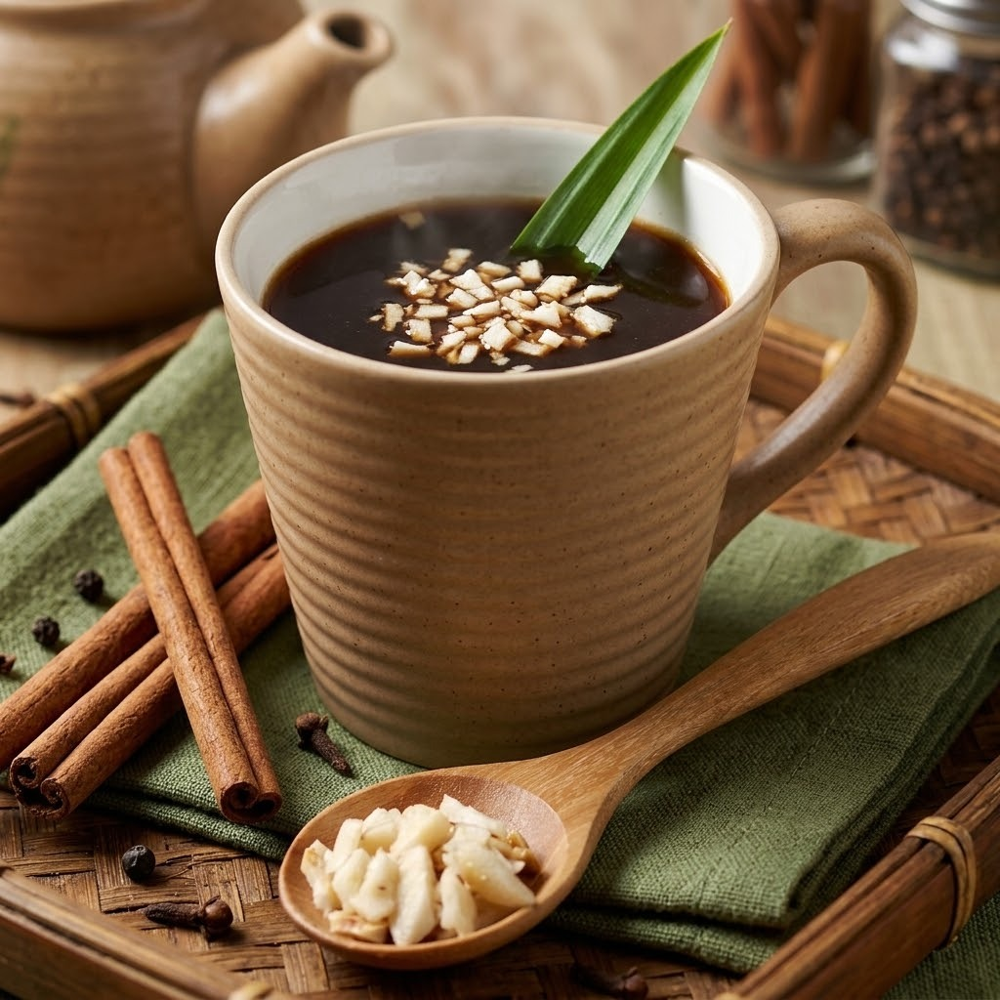
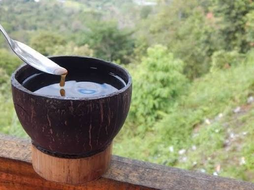

Menu Favorit
Kopi Spesial Kami
⭐ Best Seller

Aceh
★ 4.9
Kopi Tarik Creamy Foam
Kopi robusta yang dicampur susu kental manis dan dituangkan bolak-balik antagelas hingga menghasilkan busa lembut yang kaya rasa.
Rp 28.000
180 kcal
🔥 New

Maluku
★ 4.8
Rarobang Spiced Brew
Kopi arabika yang diracik bersama rempah seperti jahe dan cengkeh, serta ditaburi irisan kenari gurih.
Rp 32.000
140 kcal
🌿 Signature

Yogyakarta
★ 4.9
Jogja Charcoal Black
Kopi hitam manis yang disajikan unik dengan cemplungan arang membara untuk menetralisir keasaman dan memberi aroma asap khas.
Rp 28.000
100 kcal
⭐ Best Seller
Bali
★ 4.9
Kintamani Citrus Arabica
Kopi arabika hasil tumpang sari alami yang menyajikan rasa lembut, bersih, serta aroma citrusy yang segar.
Rp 30.000
90 kcal
🔥 New

Sumatra Barat
★ 4.8
Kawa Leaf Brew
Seduhan daun kopi sangrai beraroma herba asap dan rasa sepat segar, disajikan khas dalam tempurung kelapa.
Rp 30.000
90 kcal
🌿 Signature

Aceh
★ 4.9
Khop Inverted Robusta
Kopi robusta manis yang disajikan unik dengan gelas terbalik di atas piring dan sedotan untuk menjaga kehangatannya.
Rp 32.000
90 kcal